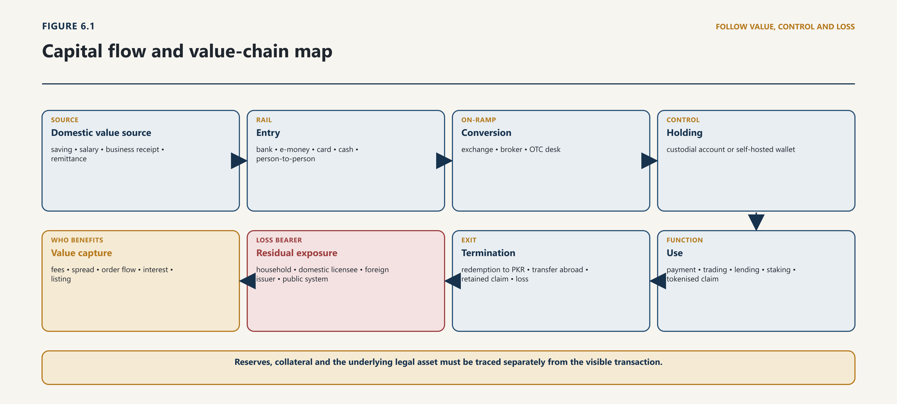
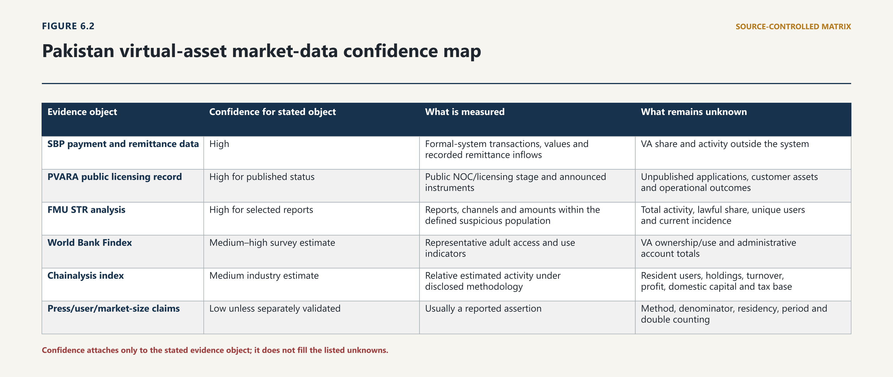
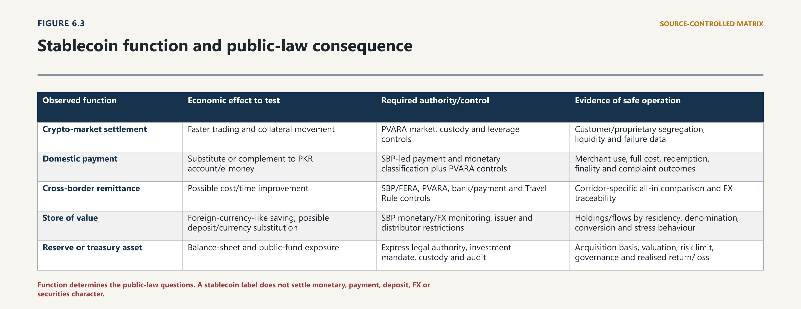
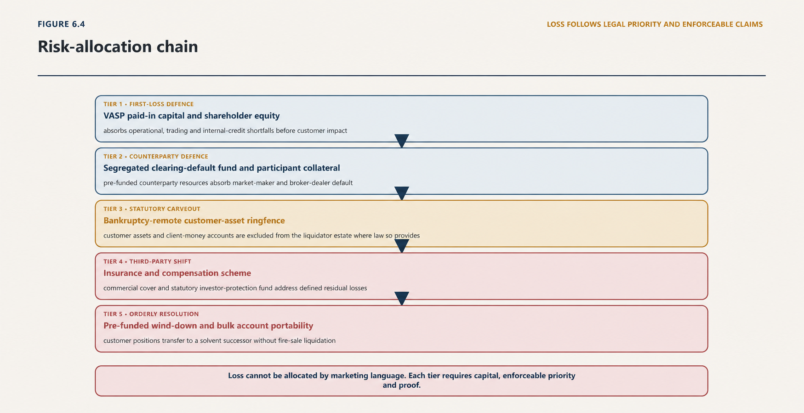
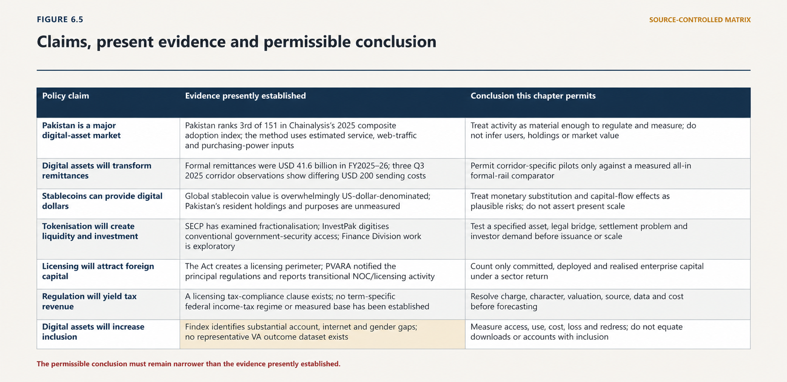

Chapter Six · Part 1
Capital: Markets, Monetary Sovereignty and Distribution
6.1 Capital as a Constitutional and Institutional Question
6.1.1 Value formation and public order
1
Digital assets become a question of capital when they organise claims upon value, direct resources into or away from enterprise, alter the terms on which people save and transact, or redistribute the power to decide who may enter, exit and recover. Capital in this treatise is therefore broader than investment funding. It includes the currency in which a claim is denominated; the reserves, collateral or productive assets said to support it; the infrastructure that carries it; the entities that collect fees and information; the legal priority attached to it; and the person who absorbs loss when the arrangement fails.
6.1.2 Capability, power and the allocation of loss
2
That wider understanding prevents two symmetrical errors. The first is promotional: a token, licence category, memorandum of understanding or international ranking is treated as proof that new productive capital has arrived. The second is dismissive: all digital-asset activity is treated as speculation or evasion without asking whether a particular arrangement funds an enterprise, improves an existing payment process, creates an enforceable claim or provides a regulated service. Neither conclusion follows from technical form. Chapter 4 established that the same token architecture can support materially different assets, activities and control structures. This chapter asks what the arrangement finances, how value moves, which balance sheet carries the exposure, where economic power sits and how gains and losses are distributed.
3
Four economic functions must remain distinct. Productive capital formation finances assets, skills or enterprises capable of generating goods, services, exports or public capacity. Financial intermediation connects savers, borrowers, issuers, investors and payment users, while allocating credit, liquidity and operational risk. Speculative circulation transfers positions whose return depends principally on resale, price movement or leverage. Monetary substitution moves saving, pricing or payment from the domestic currency into another unit. A single platform may perform all four. Regulation fails when it classifies the platform by its branding and ignores the combined functions.
4
The governing inquiry has six gates:
5
Value object: what asset, money, contractual claim, security, commodity exposure or expectation is being acquired?
6
Flow: which person supplies value, through which currency and route, and where does the value settle?
7
Enterprise: which legal entity receives capital, for what disclosed use, and what domestic capability or output follows?
8
Infrastructure: who controls issuance, access, custody, trading, data, reserves, settlement and exit?
9
Public and private return: what cost, time, access, productivity, revenue or resilience improvement is measured, over what baseline and period?
10
Loss allocation: who bears volatility, fraud, cyber failure, reserve shortfall, insolvency, enforcement delay, currency movement and legal invalidity?
11
These gates turn “opportunity” into a proposition capable of proof. They also expose political distribution. A market can grow while domestic capability does not: residents may provide order flow and fees to an offshore platform, reserves may sit abroad, core intellectual property and high-value employment may remain elsewhere, and losses may be local. Conversely, foreign participation can be productive if it brings paid-in capital, accountable local entities, infrastructure, skills, exports, tax compliance and enforceable customer protection. The relevant measure is not foreign or domestic identity by itself. It is the complete allocation of value, control, capability and risk.
12
The six gates describe a sequence, and the sequence has a shape. Domestic value enters at an identifiable point — a salary, a business receipt, a remittance, a household saving — and passes through conversion, custody, execution and settlement before it becomes either an enforceable claim or an absorbed loss. At each link a different person collects a fee, holds information, exercises operational control or acquires a right of set-off. The chain does not end at the transaction. It ends on the balance sheet that carries the residual exposure, which may belong to a household, a domestic licensee, a foreign issuer or platform, or ultimately the public system.

13
Read as a value chain rather than a payment path, the map puts the political question directly. Which links sit in Pakistan, under Pakistani law, staffed by people a Pakistani regulator can examine and a court can reach? Where do the fees, the spread, the order-flow information and the reserve income accrue? Which jurisdiction holds the assets said to support the claim? And when the chain fails, whose balance sheet absorbs the shortfall? A chain whose value capture and residual exposure sit on opposite sides of a border is not for that reason unlawful, but it is a distributive arrangement and must be evaluated as one rather than described as a technical improvement.
14
Capital consequence. Digital-asset policy must evaluate the whole capital arrangement, not the token at its visible edge. A proposition deserves public support only where the value object, flow, enterprise, infrastructure, measurable return and loss allocation are intelligible.
6.2 Pakistan’s Macro-Financial Setting
6.2.1 Foreign-exchange constraints, inflation and financial inclusion
15
Pakistan’s digital-asset choices begin inside a constrained capital system. According to the Pakistan Economic Survey 2025–26, provisional real GDP growth was 3.70 per cent and GDP at current market prices was PKR 126.870 trillion. Total investment was 14.38 per cent of GDP; national saving was 14.13 per cent; and domestic saving was 7.03 per cent, down from 7.87 per cent in FY2025. Gross fixed capital formation was provisionally estimated at PKR 16.0712 trillion, of which private-sector investment accounted for PKR 12.1619 trillion. Net foreign direct investment was reported at USD 1.4 billion for July–March FY2026, led in the Survey by China and Hong Kong and concentrated principally in power and financial services.1
6.2.2 Banking structure, capital markets and public capacity
16
Each qualification matters. The national-account figures are provisional. The FDI observation is nine months, not the full fiscal year. None of the figures identifies a digital-asset component. They establish the economic scale against which claims should be judged: a country seeking more domestic saving, investment and export capacity should ask whether a virtual-asset activity adds to productive formation, merely changes the instrument in which existing wealth circulates, or facilitates a shift of domestic value into foreign-issued assets and platforms.
17
The payments system is already substantially digital within its formal boundary. For January–March 2026, the State Bank of Pakistan reported 3.7 billion retail payments worth PKR 168.8 trillion through formal banking and payment channels. It expressly excluded transactions outside that system. Of the reported retail-payment volume, 92 per cent was conducted through digital channels; 3.4 billion digital payments carried PKR 68 trillion; mobile applications accounted for 2.9 billion transactions; and Raast processed 742.1 million transactions worth PKR 23.3 trillion.2 These are transaction counts, not unique people. They nonetheless change the policy baseline. A digital-asset payment proposal is not competing with paper alone. It must show an incremental advantage over rapidly scaling domestic account, wallet and instant-payment rails.
18
Demand-side inclusion is much weaker than the transaction totals might imply. The World Bank’s nationally representative Global Findex survey for Pakistan, conducted in 2024 with 1,000 adults, estimated that 27 per cent of adults had an account, 25 per cent had made or received a digital payment in the previous year, 13 per cent had saved formally and 8 per cent had borrowed formally. It estimated mobile-phone ownership at 63 per cent and internet use in the preceding three months at 36 per cent. The corresponding female account-ownership estimate was 11.9 per cent.3 Administrative account and agent totals, payment volumes and survey-reported adult use answer different questions. They cannot be merged into a single “digital readiness” percentage.
19
This combination—high formal transaction growth with shallow and unequal household access—defines the political economy. Digital infrastructure can move enormous value while many adults lack an account, connectivity, independent capability, documentation, confidence or effective recourse. A virtual-asset wallet may technically be open to anyone with a device, but practical access may still depend on cash conversion, an exchange or broker, identity verification, internet reliability, knowledge of keys and fees, and a trusted exit into rupees. Self-custody can remove one intermediary while placing security and recovery burdens directly on the user. Custodial access can simplify use while reintroducing platform power and insolvency risk.
20
The external account supplies a second constraint. Formal workers’ remittances reached USD 41.6 billion in FY2026, up 8.6 per cent from USD 38.3 billion in FY2025.4 That is a major flow of foreign exchange and household support. It is not evidence that stablecoins currently carry remittances to Pakistan. Nor does a current-account or reserve improvement eliminate monetary risk. Foreign-currency liquidity, external payments and confidence in the rupee remain public concerns that make the denomination, reserve location and convertibility of digital claims consequential.
21
The macro setting therefore supplies four tests. First, a digital-asset product should not be credited with capital formation unless it adds funded enterprise, assets, productivity or capability. Second, a payment product should be compared with existing formal rails on complete user cost, time, reliability and recourse. Third, a foreign-currency token must be assessed as a possible monetary and capital-flow channel, not only as software. Fourth, inclusion must be measured at the level of persons and outcomes, not inferred from aggregate transaction volume.
22
Capital consequence. Pakistan’s baseline is not an empty digital market waiting to be created. It is a low-saving, low-investment and externally sensitive economy with rapidly growing formal payment infrastructure and persistent access gaps. Digital-asset policy must prove an improvement against that system rather than claim value from digitisation alone.
6.3 Participation and Market Structure
6.3.1 What adoption evidence establishes
23
The controlled evidence supports a narrower conclusion than the public claim that Pakistan has one of the world’s largest crypto markets: activity appears material, but no reliable Pakistan-wide denominator exists for users, holdings, transaction value, stablecoin or OTC share, profit, loss or sectoral investment.
6.3.2 Retail, institutional and offshore participation
24
The most visible comparative signal is the 2025 Chainalysis Global Crypto Adoption Index, which ranked Pakistan third among 151 countries, after India and the United States. That fact is usable only with its method. The index combines four relative rankings: estimated value received by centralised services, estimated retail-sized value received by centralised services, estimated value received by decentralised-finance protocols and estimated institutional-sized value received by centralised services. It weights measures by GDP per capita on a purchasing-power-parity basis, takes a geometric mean and normalises the result. Country attribution relies materially on web-traffic patterns associated with services and protocols. Chainalysis acknowledges imperfections caused by virtual private networks and similar tools.5
25
Several inferences are therefore prohibited. Third place does not mean Pakistan has the third-largest absolute market. It does not count unique resident users. A transaction above USD 1 million enters an “institutional” sub-index by size; it is not proof that a Pakistani licensed institution executed it. Web traffic does not establish residence, beneficial ownership, source of funds or the location at which capital is legally deployed. GDP-per-capita weighting is part of the ranking by design, so the result measures relative estimated activity under the vendor’s methodology rather than a directly observed national market share.
26
Official financial-intelligence evidence confirms activity through a different, selected lens. The Financial Monitoring Unit analysed 1,841 virtual-asset-related suspicious transaction reports received for July 2021–June 2022, compared with 374 in the preceding year. Reporting sectors included Islamic, private, public and microfinance banks, electronic-money institutions and exchange companies. The treatise’s tables identified 20,885 attempted or conducted transactions and PKR 930.758 million within the suspicious dataset, including purchases, sales and person-to-person transactions.6 The report also describes bank accounts, cards, internet and mobile banking, wallets and money-transfer channels as observed touchpoints.
27
Those findings are important but cannot measure the market. An STR is a selected report generated because a reporting entity identifies suspicion; it is neither a randomly sampled transaction nor a finding of criminal liability. Reporting instructions, detection capability and reporting quality influence the population. The FMU report itself states that reporting quality can affect the analysis. Its narrative also contains an internal inconsistency about the period attached to the PKR 930.758 million total. The total can be used only as labelled in the treatise’s analytical tables, not as annual Pakistan turnover or an illicit-market share.
28
The observed structure is mixed. Offshore or foreign-controlled exchanges, custodial platforms and person-to-person arrangements provide access; domestic banking, card, wallet and cash channels can touch entry or exit; self-hosted wallets and decentralised protocols may operate without a conventional protocol-layer account; and domestic legal presence, bank connections and reporting remain transitional where no full licence exists.
29
PVARA publicly announced NOCs for Binance and HTX in December 2025. Those announcements pre-dated the Pakistan Virtual Asset Services Regulations 2026 and the Pakistan Virtual Asset Services Activity Specific Regulations 2026, notified on 21 August 2026 as SRO 1419(I)/2026 and SRO 1420(I)/2026 respectively. Under PVARA’s own explanation, an NOC is a preliminary step for AML registration and local incorporation, not a full commercial licence. The State Bank’s 2026 banking circular reinforces the distinction: an NOC holder may receive only a limited-purpose account for completing licensing formalities; virtual-asset-related transactional services follow a verified PVARA licence and bank due diligence.7 Notification of the Regulations supplies the present delegated baseline but does not retrospectively convert an NOC into a licence or prove that a particular applicant has completed licensing.
30
The absence of a complete public market-return series prevents reliable measurement of customer assets, revenue, fees, concentration, employment, tax compliance, complaints, losses and cross-border flows. The inherited USD 20 billion “market” figure cannot be rescued by repetition: no processed source supplied its population, price date, wallet-attribution method, double-counting control or residency test. It is rejected.

| Evidence object | Confidence for stated object | What is measured | What remains unknown |
|---|---|---|---|
| SBP payment and remittance data | High | Formal-system transactions, values and recorded remittance inflows | VA share and activity outside the system |
| PVARA public licensing record | High for published status | Public NOC/licensing stage and announced instruments | Unpublished applications, customer assets and operational outcomes |
| FMU STR analysis | High for selected reports | Reports, channels and amounts within the defined suspicious population | Total activity, lawful share, unique users and current incidence |
| World Bank Findex | Medium–high survey estimate | Representative adult access and use indicators | VA ownership/use and administrative account totals |
| Chainalysis index | Medium industry estimate | Relative estimated activity under disclosed methodology | Resident users, holdings, turnover, profit, domestic capital and tax base |
| Press/user/market-size claims | Low unless separately validated | Usually a reported assertion | Method, denominator, residency, period and double counting |
31
Pakistan has an activity signal but not a market census. Regulatory returns should progressively identify verified customers and residency; assets and liabilities; client and proprietary flows; fiat entry and exit; order-book and OTC volumes; stablecoin denomination; custody; withdrawals, failures, fees, complaints, tax identifiers, employment, paid-in capital and cross-border counterparties. Aggregated publication should protect sensitive information while allowing public claims to be judged.
32
Capital consequence. Material participation is plausible and supported by more than rhetoric, but its scale, composition and distribution are not presently measured well enough to support a market-value claim or a macroeconomic benefit forecast. Data scarcity is itself an institutional finding and a condition on permission to scale.
6.4 Payments, Remittances and Settlement
6.4.1 Efficiency propositions and evidential limits
33
Remittances are the strongest recurring use-case claim because the measured formal flow is large and because cross-border transfers can involve fees, foreign-exchange margins, delays and multiple intermediaries. Yet the USD 41.6 billion FY2026 total measures money received through recorded formal channels. It does not identify a stablecoin address, an exchange, a blockchain or an unrecorded informal transfer. The benefit proposition must therefore be framed as a counterfactual: can a specifically designed, lawfully authorised digital-asset arrangement improve a defined corridor over the existing route?
6.4.2 Domestic settlement, cross-border value and monetary control
34
The comparison must be complete. The World Bank’s Remittance Prices Worldwide database reported total average costs for a USD 200-equivalent transfer to Pakistan in the third quarter of 2025 of 2.17 per cent from the United Arab Emirates, 2.82 per cent from Saudi Arabia and 2.39 per cent from the United Kingdom. These are corridor and transfer-size observations, not a single Pakistan average. Provider, access channel, receiving method, exchange-rate margin and timing vary.8 A stablecoin claim must be tested against the same granularity.
35
An apparent low network fee is not the complete remittance cost. The sender may pay for fiat conversion, exchange spread, wallet or platform service, blockchain execution, foreign-exchange conversion and cash-out. The recipient may face withdrawal limits, delayed redemption, price deviation, fraud or account closure. Compliance, sanctions screening, Travel Rule messaging, cybersecurity, customer service, reserve audits and safeguarding are not avoidable friction; they are part of a lawful payment product. If the transfer ends in rupees, the arrangement still needs an authorised domestic settlement and foreign-exchange route. If it leaves value in a dollar-referenced token, it may have changed from remittance delivery into foreign-currency-like saving and monetary substitution.
36
The existing digital infrastructure also matters. Raast and regulated bank, electronic-money and payment-service systems already provide domestic electronic movement and final interfaces with customer accounts. A new cross-border arrangement may use distributed-ledger infrastructure between regulated endpoints while paying out through conventional rails. The policy question is then narrower and more useful: does the additional layer reduce reconciliations, prefunding, time or cost without weakening foreign-exchange control, settlement certainty or recourse?
37
PVARA’s April 2026 advisory was prompted by public announcements concerning stablecoins, remittances and cross-border payments. It states that an announced pilot or agreement enabling virtual-asset services requires prior authorisation and warns that public announcement without engagement may create legal and reputational risk.9 The advisory supplies the correct evidential classification. A meeting or MoU is an announcement. Prior authorisation permits a defined step. A pilot produces bounded evidence. Only measured operation can establish a benefit.
38
A credible Pakistan corridor pilot should publish in advance:
39
the sending and receiving countries, user population and transfer size;
40
every fiat, token and settlement leg, including issuer and reserve location;
41
the authorised dealers, banks, VASPs and payment providers involved;
42
the all-in customer cost and reference exchange rate at each leg;
43
time to irrevocable recipient access, not only time to an on-chain confirmation;
44
failed, reversed, frozen and disputed transactions;
45
customer-loss allocation, complaint route and recovery time;
46
Travel Rule, sanctions, source-of-funds and transaction-monitoring performance;
47
net stablecoin accumulation or conversion and the foreign-exchange treatment; and
48
a controlled comparison with the incumbent formal route.
49
The public objective is not to maximise token throughput. It is to deliver lawful value more cheaply, quickly and safely while preserving the external-account information and controls on which monetary management depends. A pilot that reduces one fee but externalises fraud, redemption, compliance or currency risk has not demonstrated a social saving.
50
Capital consequence. Pakistan’s remittance flow creates a serious test bed, not a guaranteed digital-asset market. Stablecoin or tokenised settlement should proceed, if at all, through corridor-specific, jointly authorised pilots whose complete cost, timing, FX, integrity and loss outcomes are published against the existing formal baseline.
6.5 Stablecoins and Monetary Sovereignty
6.5.1 Dollarisation, reserve assets and redemption
51
Stablecoins combine a transfer instrument with a monetary claim. The crucial facts are the unit of denomination, issuer obligation, reserve assets and location, persons entitled to redeem, suspension conditions, and route by which domestic money enters and leaves the token.
6.5.2 Capital flight, payment substitution and policy response
52
The international structure is highly concentrated in the United States dollar. A 2026 BIS paper estimates that approximately 98 per cent of stablecoin value is dollar-denominated and describes three possible trajectories: use confined principally to crypto markets; wider digital dollarisation, especially in emerging and developing economies; and domestically integrated arrangements capable of preserving more policy autonomy if properly regulated.10 The scenarios are global analytical frames, not a measurement of Pakistan’s stablecoin stock. Their relevance lies in the mechanism.
53
When a resident converts rupees into a dollar-referenced token, the user gains dollar-like exposure but may have either a redemption claim against a foreign issuer or only a platform-mediated ability to sell. Reserves may sit outside Pakistan and access may depend on an exchange, wallet, smart contract and foreign banking network. The token can therefore make foreign-currency-like exposure easier to acquire and retain even where conventional access is regulated.
54
Scale determines the macroeconomic consequence. Material use as a store of value can encourage currency substitution, reduce deposit funding and accelerate responses to stress; cross-border use can alter the timing and visibility of capital movement. IMF analysis identifies currency substitution, capital-flow volatility, bank disintermediation and weakened monetary transmission as state-contingent risks.11 This does not make every holding harmful. It makes a remotely accessible, continuously transferable and unmeasured foreign-denominated layer a matter for prior control.
55
Pakistan’s primary law anticipates some private-law and prudential risks. Section 31 of the Virtual Assets Act requires an issuer intending to issue a fiat-referenced token in Pakistan to maintain one-hundred-per-cent reserve backing in high-quality liquid or other prescribed assets, provide redemption at par without undue delay, publish audited reserve disclosures, maintain AML/CFT/CPF controls and prioritise holders in insolvency. It authorises differentiated requirements and consultation with SBP on reserve arrangements. The Act also declares virtual assets not to be legal tender and preserves the Foreign Exchange Regulation Act 1947.12
56
Those provisions are not a complete monetary constitution. “Consultation” does not allocate final authority over payment, deposit-like or foreign-exchange functions. A reserve percentage does not answer eligibility, duration, mismatch, concentration, encumbrance, custody, valuation, audit, stress liquidity or holder priority. Proof of assets does not prove complete liabilities; “par” redemption does not identify eligible users, fees or delivery time.
57
SBP’s BPRD Circular Letter No 10 of 2026 permits limited-purpose accounts for NOC holders and wider services for verified licensees subject to due diligence and monitoring. It prohibits regulated entities from investing, trading or holding virtual assets with own funds or customer deposits and preserves foreign-exchange responsibility.13 This limits direct bank exposure but not household, platform, payment or external-account risk.

| Observed function | Economic effect to test | Required authority/control | Evidence of safe operation |
|---|---|---|---|
| Crypto-market settlement | Faster trading and collateral movement | PVARA market, custody and leverage controls | Customer/proprietary segregation, liquidity and failure data |
| Domestic payment | Substitute or complement to PKR account/e-money | SBP-led payment and monetary classification plus PVARA controls | Merchant use, full cost, redemption, finality and complaint outcomes |
| Cross-border remittance | Possible cost/time improvement | SBP/FERA, PVARA, bank/payment and Travel Rule controls | Corridor-specific all-in comparison and FX traceability |
| Store of value | Foreign-currency-like saving; possible deposit/currency substitution | SBP monetary/FX monitoring, issuer and distributor restrictions | Holdings/flows by residency, denomination, conversion and stress behaviour |
| Reserve or treasury asset | Balance-sheet and public-fund exposure | Express legal authority, investment mandate, custody and audit | Acquisition basis, valuation, risk limit, governance and realised return/loss |
58
Policy must distinguish these functions. A wholesale, time-limited settlement pilot among regulated institutions is not equivalent to unrestricted retail distribution. A token used briefly as a bridge asset and automatically converted into rupees creates a different stock effect from one marketed as permanent digital dollars. A Pakistan-issued rupee-referenced token may reduce direct currency substitution but still raise run, reserve, payment-system and governance risks. A state or public-entity holding raises a separate question of statutory investment power, budget authority, custody and public accountability.
59
Before wider retail permission, Pakistan needs minimum monetary data: purchases and redemptions by resident status; asset and currency; fiat source and destination; issuer and reserve jurisdiction; direct and platform-mediated redemption; net resident holdings; flows to self-hosted wallets; bank-deposit and FX interactions; payment versus investment use; and stress-period behaviour. PVARA can collect service-level data, but SBP must define the monetary and foreign-exchange questions and receive timely aggregate and supervisory information. FBR and FMU need lawful, purpose-specific access for their mandates. The solution is not unrestricted sharing of personal data; it is an agreed data architecture with fields, thresholds, retention, confidentiality and public aggregates.
60
The sequencing principle is strict. Pakistan should not infer that foreign-currency stablecoins are safe because the rupee is currently stable, nor that they are necessarily harmful because dollarisation is possible. It should permit only functions for which the reserve, redemption, FX, payment, data, consumer and failure controls are operational and for which the state can observe the resulting stock and flow.
61
Capital consequence. A stablecoin is simultaneously a claim, payment technology and possible channel of monetary substitution. PVARA licensing cannot by itself settle its monetary character. SBP-led classification, binding concurrence where payment or FX functions are implicated, granular flow data and function-specific sequencing are conditions of responsible permission.
6.6 Investment, Venture and Enterprise Formation
6.6.1 Funding, entrepreneurship and institutional capital
62
The attraction of investment is frequently invoked as the principal reward for regulatory recognition. That claim requires an accounting vocabulary. An announcement expresses intention: a meeting, strategy, public statement, proposed allocation or memorandum. A commitment creates a signed obligation subject to disclosed conditions. Deployment occurs when money is paid, equity is issued, equipment is acquired, people are employed or infrastructure is connected. Realisation is an operating result—revenue, export earnings, productive assets, sustained employment, tax, research capacity, local supplier development or a measured public service after deployment.
6.6.2 Legal certainty, market access and risk
63
This hierarchy matters because Pakistan’s public record contains NOCs, exploratory discussions, MoUs, proposed tokenisation and stated interest from foreign platforms and technology companies. These may be important steps. They are not interchangeable with paid-in capital or operating output. The macro baseline reinforces the distinction: the Economic Survey’s USD 1.4 billion net FDI figure for July–March FY2026 is partial-period national investment data and does not identify digital assets. No audited or official series processed for this chapter separates announced, committed, deployed or realised virtual-asset capital.
64
The capital account for a digital-asset enterprise should include at least:
65
cash equity actually paid into a Pakistan-incorporated entity and the verified source of funds;
66
capital maintained against customer, custody, credit, market and operational risks;
67
domestic payroll, employee functions and decision authority rather than headcount alone;
68
spending on secure infrastructure, local vendors, professional services and training;
69
intellectual property created or controlled in Pakistan;
70
export revenue and repatriated earnings distinguished from domestic customer fees;
71
customer assets and reserves kept separate from corporate capital;
72
taxes filed and paid under an identified treatment; and
73
dividends, service fees, reserve income, data value and other transfers leaving Pakistan.
74
This ledger reveals whether a foreign platform creates domestic capability or principally obtains market access. Local incorporation can improve accountability but may be thin if key custody, matching, liquidity, risk decisions, data and balance sheets remain offshore. Conversely, a foreign-controlled firm can contribute durable capability if the licensed local entity has adequate capital, responsible officers, systems, skilled employment, enforceable contracts, audited accounts and a material operating mandate. Nationality is not a substitute for substance.
75
Domestic enterprise formation also needs functional differentiation. A full retail exchange with custody, client money, market making and leverage creates higher capital and failure demands than compliance software, cybersecurity, blockchain analytics, wallet-security engineering or export-oriented infrastructure development. The legal order should not force every technology business into the exchange perimeter. Nor should a firm escape regulation by describing custody, advice, brokerage or issuance as “software”. Chapter 4’s five-object method—asset, activity, actor, infrastructure and control point—should determine the perimeter and the capital burden.
76
Venture and token fundraising require additional caution. An issuer can raise value quickly from dispersed purchasers without the governance, disclosure, voting, accounting and exit rights expected in conventional equity or debt. The token may give access, revenue participation, redemption, governance or no enforceable enterprise claim. A high token valuation may reflect thin liquidity or related trading rather than capital available to the issuer. Fundraising should count as productive capital only to the extent that proceeds are verified, lawfully raised, safeguarded, deployed for disclosed purposes and connected to enforceable holder rights.
77
The state’s investment proposition should therefore be expressed as a measurable programme, not a forecast. PVARA, SECP, SBP, the Board of Investment, FBR and the Pakistan Bureau of Statistics should agree a sector return covering entity formation, ownership, paid-in capital, employment by function, compensation, domestic procurement, exports, customer assets, reserves, fees, taxes, incidents and exit. The return should distinguish licence categories and avoid public disclosure of firm-sensitive detail while producing credible aggregates.
78
Capital consequence. Regulatory recognition may enable investment, but it does not create it. Pakistan should count capital when it is legally committed, deployed and realised, and should condition market access on domestic accountability and capability proportionate to the value and risk extracted from residents.
6.7 Tokenisation and Productive Capital
6.7.1 Claims on real assets and infrastructure
79
Tokenisation is often described as a method of unlocking illiquid assets, widening ownership or reducing settlement cost. These propositions are possible but not self-executing. A token can record or represent an interest; it cannot by software alone create title, cure a defective asset, produce cash flow, remove statutory transfer formalities or guarantee a buyer.
6.7.2 Liquidity promises, enforceability and governance
80
The productive-capital inquiry begins with the off-chain legal object. For real property it must identify title, authoritative registry, transfer and registration rules, encumbrances, possession, valuation, income and enforcement. For receivables it must establish existence, assignment, debtor defences, priority and collection. For securities or sovereign debt it must locate issuance authority, investor rights, the official holding record, payment obligation, settlement finality and market rules. For commodities it must establish quality, location, custody, insurance and delivery. The token is one component of this structure.
81
SECP’s 2022 landscape report recognised fractionalisation as the creation of digital representations or fractions linked to assets that continue to exist off-chain. SECP also selected a real-estate tokenisation solution for testing in an earlier regulatory-sandbox cohort.14 These materials show regulatory experimentation, not a nationally operational title or trading system. Sandbox selection proves that a proposition was admitted to controlled testing; it does not prove commercial deployment, legal effectiveness, liquidity or investor outcome.
82
Existing digitisation provides a demanding comparator. In July 2026 SBP launched InvestPak, a web and mobile ecosystem through which eligible individuals and companies with bank and investor-portfolio-securities accounts can access Government of Pakistan securities. The securities remain within the conventional legal and account infrastructure.15 This demonstrates that digital access does not require tokenisation. A public-debt token must therefore show what additional problem it solves—issuance reach, fractional access, delivery-versus-payment, settlement time, collateral mobility or cross-border distribution—and whether the benefit exceeds the new legal, custody, cyber and interoperability risks.
83
The Finance Division has described government-debt tokenisation work as early-stage and exploratory and expressly stated that tokenisation is not a substitute for investor demand and requires regulation, education and institutional capacity.16 That is the correct status. An MoU concerning a possible platform is not a token issuance; an issuance is not subscribed capital; subscription is not secondary liquidity; and liquidity is not a reduction in public borrowing cost unless measured against a comparable instrument.
84
Every productive tokenisation pilot should identify:
85
the underlying asset or claim and its independently verified condition;
86
the issuer or special-purpose entity and the legal nature of holder rights;
87
the authoritative record when on-chain and statutory registers diverge;
88
custody and control of the asset, token and payment leg;
89
valuation, disclosure, audit and related-party safeguards;
90
transfer restrictions, investor eligibility and market-abuse controls;
91
insolvency priority, enforcement and exit;
92
tax, stamp, registration and Shariah treatment where applicable;
93
actual investor demand and liquidity; and
94
the measured cost, time, access or capital-formation improvement.
95
Tokenisation can make an already sound claim easier to issue, divide, transfer or settle. It can also make a weak claim easier to distribute. Productive capital depends on the quality of the asset, enterprise, rights and institutions—not on the precision of the digital representation.
96
Capital consequence. Pakistan should authorise tokenisation asset by asset and problem by problem. No public promotion or retail scale should precede a legally effective bridge to the underlying right, authoritative records, delivery-versus-payment, insolvency treatment and measured demand.
6.8 Leverage, Liquidity and Market Failure
6.8.1 Interconnection and run dynamics
97
Liquidity is not simply the ability to display a price. It is the ability to transact a relevant quantity at a reasonably continuous price and to convert the position into usable value under ordinary and stressed conditions. A platform can show constant trading while liquidity is concentrated in a few assets, venues, market makers or related parties. Reported volume may include internal transfers, incentive-driven activity or transactions that do not support a customer’s exit in stress.
6.8.2 Contagion, insolvency and loss allocation
98
Digital-asset markets commonly combine functions that conventional systems separate or subject to distinct controls: exchange, brokerage, custody, lending, staking, issuance, market making, proprietary trading and settlement. Vertical integration can reduce friction, but it can also allow a platform to control admission, price formation, customer assets, collateral valuation, liquidation and the evidence needed to challenge it. IOSCO’s market recommendations accordingly focus on conflicts, market manipulation, custody, operational risk, retail distribution and cross-border cooperation rather than treating platform licensing as a complete safeguard.17
99
Price formation deserves separate treatment because the price is the input to almost every other number in a capital account. A displayed price is the output of a particular venue’s order book, matching rules, fee schedule, market-maker inventory and reference-rate construction. Two venues quoting the same asset can diverge where arbitrage is constrained by capital controls, banking access, withdrawal limits or settlement time — precisely the constraints a Pakistani user faces. A local premium or discount is therefore not evidence of local demand alone; it may be measuring the cost of moving value across the perimeter. Where a resident’s realisable price depends on a thin domestic order book or a person-to-person counterparty, the mid-market quotation used in marketing, in portfolio valuation and potentially in a tax computation is not the price at which the position can actually be closed.
100
That gap carries legal consequences well beyond disclosure. Valuation determines margin calls, collateral haircuts, reserve adequacy, custody reconciliation, insolvency distributions, the measure of loss in a fraud claim and the base of any tax charge. A regime that does not specify which price source governs, at what time, drawn from which venues, and with what treatment of stale, halted or manipulated quotations, leaves each of those determinations to the party with the strongest incentive to choose favourably. Pakistan should require a licensed provider to publish and consistently apply a documented reference-price methodology, to retain the underlying data for the periods relevant to complaint, supervisory and evidential use, and to disclose the deviation between the price used for customer-facing valuation and the price at which retail-sized orders actually executed.
101
Leverage intensifies the structure. A customer may borrow fiat or tokens, pledge volatile collateral and become subject to automated margin and liquidation rules. A platform may re-use or lend customer assets, or rely on related tokens as collateral. A price fall can then trigger liquidation, deepen the fall, create shortfalls and transmit loss to lenders, customers or reserve arrangements. On-chain automation can execute the sequence quickly; it does not decide whether disclosures were adequate, collateral use was authorised or losses were lawfully allocated.
102
Stablecoin liquidity introduces a linked run channel. If holders doubt reserves or redemption, secondary-market prices can diverge from the reference value. Direct redemption may be restricted to eligible or large users, leaving retail holders dependent on exchanges. Reserve assets may be liquid in ordinary conditions but difficult to sell without loss under stress. A vertically integrated group can further concentrate issuer, venue, custodian and market-maker risk.
103
Pakistan’s current bank restriction reduces one direct contagion path: SBP-regulated entities may not invest, trade or hold virtual assets using their own funds or customer deposits. Yet other paths remain. Banks can hold VASP accounts; customers can fund platforms; operational incidents can create payment and fraud claims; foreign-currency conversion can affect external flows; and public confidence can be damaged by losses associated with a nominally regulated provider. A licensed VASP’s failure can also impose demands on courts, investigators and regulators even if bank solvency is unaffected.

104
A capital regime must specify the loss waterfall before failure. It should address segregation and beneficial-owner records; use and re-use of customer assets; leverage and concentration limits; collateral haircuts; related-party exposure; reserve and liability reconciliation; liquidity buffers; recovery and wind-down; compensation or insurance boundaries; withdrawal priority; record portability; and treatment of forks, airdrops and inaccessible keys. Proof-of-reserves exercises may assist asset verification but cannot replace complete liabilities, legal segregation and insolvency analysis.
105
Market data must also support surveillance. PVARA needs order and trade records, beneficial and controller information, customer/proprietary flags, related-party identifiers, wallet and bank reconciliations, liquidation data and cross-venue cooperation. Public reporting should show concentration, spreads, outages, withdrawals, complaints and losses in aggregated form. Otherwise “market integrity” remains an institutional intention rather than a demonstrated outcome.
106
Capital consequence. Liquidity and leverage determine whether a market can transmit or absorb stress. Pakistan should permit higher-risk functions only after custody, conflicts, collateral, liquidation, reserve, surveillance, recovery and loss-allocation controls are independently testable, with bank and public-sector exposures kept expressly bounded.
6.9 Distribution, Inclusion and Consumer Welfare
6.9.1 Access, exclusion and unequal incidence
107
Financial inclusion is not achieved when a product becomes downloadable. It requires that a person can enter, understand, use and leave a financial arrangement on terms that improve rather than weaken that person’s position. Digital assets may reduce some frictions, especially where users already possess a suitable device, connectivity, identity, payment access and the ability to judge volatile or legally complex products. The same design can exclude people who lack those conditions or transfer costs and risks to them.
6.9.2 Who receives value and who absorbs failure
108
The World Bank’s 2024 Findex observations for Pakistan provide a disciplined baseline. In a nationally representative survey sample of 1,000 adults, 27 per cent reported having an account, 25 per cent reported making or receiving a digital payment, 13 per cent reported saving and 8 per cent reported borrowing through the measured channels. The same data report 63 per cent personal mobile-phone ownership and 36 per cent internet use. The World Bank’s sex-disaggregated portal reports an account-ownership value of 11.9 per cent for women in Pakistan.18 These are survey estimates, not administrative counts, and their categories are not interchangeable with virtual-asset use. They nevertheless expose the weakness of any strategy that assumes universal digital, financial or informational readiness.
109
Three layers should therefore be separated.
110
Access concerns identity, device ownership, connectivity, language, disability access, payment rails, minimum transaction size and the cost of cashing in and out. A product can be technically open while materially inaccessible. If onboarding requires a smartphone controlled by another household member, English-language risk disclosures, uninterrupted data service and a bank account, formal permission will not produce equal access.
111
Use concerns whether the arrangement performs a needed function at a competitive total cost. A cross-border transfer that is fast on-chain may still require fee-bearing exchange, wallet, liquidity, foreign-exchange and cash-out services. A tokenised investment with a low displayed minimum can remain unsuitable if spreads, custody fees, volatility or exit constraints are high. Measured use must distinguish registration, funded accounts, active accounts, transaction frequency, value and purpose.
112
Outcome concerns the distribution of benefit and loss. Relevant outcomes include net transfer cost, successful and failed transactions, time to settlement, volatility borne, fraud and complaint resolution, recoveries, returns after all fees and taxes, and whether value finances domestic activity. Growth in accounts or volume is not an inclusion result if losses, failed withdrawals or coercive selling are concentrated among less-informed users.
113
Distribution is also a question of bargaining power. Platforms possess information about execution, order flow, wallet attribution, pricing, fees and incidents that a retail user cannot independently reconstruct. Affiliates may control custody, liquidity and marketing. Influencers and referral agents may receive compensation that the customer does not see. Inclusion policy must therefore address suitability, plain-language and local-language disclosure, cooling-off or leverage restrictions where appropriate, marketing responsibility, complaint evidence, rapid account preservation after fraud and accessible redress. Disclosure cannot carry the entire burden where the product is structurally unsuitable or the provider controls the risk.
114
The state should publish a distribution scorecard for each licensed retail function. At minimum, it should disaggregate participation and outcomes by sex, age band, geography and account activity where lawful and statistically reliable; show fees and spreads at common transaction sizes; distinguish gross loss reports from verified loss and recovery; report complaints, time to resolution and withdrawals; and identify the share of customers using leverage or high-risk products. Privacy and re-identification risk require aggregation thresholds and purpose limits. Absence of publishable data should be recorded as a measurement gap, not replaced with promotional estimates.
115
The priority is not to make every person an investor in digital assets. It is to ensure that lawful digital finance does not reproduce exclusion, informational inequality or uncompensated loss under the label of access. Public policy should compare a proposed product with existing rails and conventional investments rather than with an imaginary world of no service.
116
Capital consequence. Inclusion should be measured through net user outcomes, not platform reach. Retail expansion should be conditional on accessible entry and exit, suitability, cost transparency, loss evidence and workable redress, with distributional data built into supervision from the first licensed cohort.
6.10 Public Revenue and Strategic Sequencing
6.10.1 Tax, compliance cost and institutional resources
117
Regulation does not itself create a tax charge. Section 66 of the Virtual Assets Act directs every licensed VASP to comply with obligations imposed under what the Act calls the “Income Tax Act 2001” and rules or regulations issued by FBR. Pakistan’s principal federal income-tax instrument is the Income Tax Ordinance 2001. The drafting mismatch should be corrected, but the more important point is substantive: a compliance clause tells a licensee to obey applicable tax law; it does not determine the character, timing, source, value or taxpayer for every virtual-asset event.19
6.10.2 Evidence-gated market construction
118
The official consolidation of the Income Tax Ordinance amended up to 30 June 2026 contains no express occurrence of “virtual asset”, “crypto”, “digital asset” or “token” under reproducible full-text searches. That absence does not establish exemption. General charging, business-income, capital-gain, source, valuation, record and reporting provisions may apply according to the facts and legal character of the relevant right or activity. Nor does the string test exhaust sales tax, federal excise, customs, stamp, property, provincial service-tax or other legal questions. It establishes a drafting and guidance gap, not a tax opinion.
119
Chapter 13 must therefore resolve, at minimum:
120
how native assets, fiat-referenced tokens, asset-referenced tokens, tokenised securities, access rights and hybrid instruments are characterised;
121
when disposal, exchange, redemption, payment, mining, validation, staking, lending, reward, airdrop, fork or migration produces a taxable event;
122
how acquisition cost, fair value and exchange rates are established at the relevant time, including thinly traded assets and self-transfers;
123
which source and residence rules apply to offshore platforms, protocols, issuers and service income;
124
how losses, theft, insolvency, inaccessible keys and worthless tokens are treated;
125
which provider must report or withhold, what information it can reliably know, and how customer and wallet identifiers connect to tax records; and
126
how transition is handled without converting a reporting invitation into an unauthorised amnesty or retrospective charge.
127
Revenue projections must wait for those rules and for a measured base. A ranking, estimated transaction value or provider announcement cannot be multiplied by a proposed rate to produce a credible forecast. The base must distinguish gross turnover, consideration, gain, income, fees, reserve income and cross-border payments; exclude double counting among wallets and venues; model behavioural response, losses, exemptions and non-compliance; and subtract administration, supervision, investigation, litigation and technology costs. Forecasts should present ranges and assumptions, not a single politically convenient number.
128
Public capacity is itself a capital allocation. PVARA requires supervisors, technology, secure data systems, examinations, enforcement and wind-down capability. FMU and FIA require analytic and evidential capacity. FBR requires classification, valuation and reporting systems. Courts and tribunals require expertise and records that can be tested. Licence fees, penalties and hoped-for taxes should not be treated as proof that this capacity will finance itself. The budget should disclose recurring cost, fee basis, inter-agency service dependencies and the boundary between regulatory funding and impermissible incentives to approve or penalise.
129
Capital consequence. Tax legitimacy requires a clear legal base, administrable classifications, reproducible valuation and proportionate reporting. Pakistan should not promise a digital-asset revenue dividend before it can identify the taxpayer, event, base, source, data and public cost needed to collect it lawfully.
130
(a) Illicit Finance, Capital Flight and Lawful Activity
131
Digital-asset policy becomes unreliable when every transaction is treated as illicit or when technological traceability is treated as proof that crime has been solved. The correct analysis separates at least six questions: whether the underlying funds are lawful; whether the provider is licensed; whether foreign-exchange and cross-border rules are complied with; whether tax obligations are met; whether a transaction involves fraud or market abuse; and whether it constitutes money laundering, terrorist financing, proliferation financing or another offence. One transaction can engage several questions, but the legal elements and evidence are not the same.
132
FMU’s strategic analysis reported a sharp rise in virtual-asset-related suspicious transaction reports during the selected 2021–22 period: 1,841 STRs compared with 374 in the preceding comparison. Within the treatise’s selected suspicious dataset, 20,885 transactions totalled PKR 930,757,659.20 These are reports of suspicion generated through a reporting system; they are not convictions, a random market sample, a national incidence rate or a measure of total illicit flows. Their value lies in typologies and control weaknesses: account layering, rapid movement, use of multiple persons or accounts, conversion between fiat and virtual assets, and contact with foreign or weakly identified counterparties.
133
FIA’s 2025 annual report separately describes an individual investigation involving alleged deception and transfers through Ethereum and USDC.21 That case can illustrate an investigative path; it cannot establish how common such conduct is. Allegation, investigation, prosecution and final adjudication must remain distinct in public statistics. The same discipline protects enforcement credibility and prevents lawful users from being classified by association.
134
Capital flight is narrower than any outward virtual-asset transfer. A defensible finding requires evidence of the relevant person’s residence or legal obligation, acquisition and source of funds, direction and value of transfer, applicable foreign-exchange or capital-control rule, any permission or reporting requirement, beneficial destination and purpose. Public-ledger activity may reveal movements among addresses but usually does not, by itself, prove residence, ownership, the fiat source, an off-chain transfer or a breach of Pakistan law. Conversely, activity obscured within an offshore platform may not appear as a simple cross-border chain transaction even though economic control moved abroad.
135
A risk-based control system should join information at the points where law can act. Licensed providers should maintain verified customer and beneficial-owner records; customer and proprietary wallet attribution; fiat account and transaction reconciliation; originator and beneficiary information where required; sanctions and higher-risk jurisdiction screening; source-of-funds and source-of-wealth evidence proportionate to risk; alerts for layering, mule activity, rapid pass-through and unusual conversions; and records that remain usable by FMU, investigators, prosecutors and courts. PVARA, SBP, FMU, FIA, FBR and relevant provincial agencies need lawful protocols for referral, preservation, access, confidentiality and feedback. Data collection without legal admissibility, analytical capacity or case prioritisation produces surveillance volume rather than enforcement value.
136
The system also needs calibrated intervention. A suspicious indicator should prompt inquiry and, where authorised and necessary, preservation or restriction; it should not automatically become a public finding of guilt. Providers require a route to refuse or pause transactions, customers require notice and review consistent with lawful exceptions, and investigators require procedures for key material, devices, account records, chain analytics, seizure, valuation and disposal. Cross-border cases need identified cooperation channels and evidence standards rather than assertions that a blockchain is borderless.
137
Pakistan’s 2026 IMF programme materials recognise that digital-asset policy engages monetary sovereignty, capital-flow management, financial stability and financial integrity.22 That framing does not supply the domestic legal answer. It confirms why licensing and AML/CFT controls must operate alongside, and not silently displace, foreign-exchange, tax, criminal-procedure, evidence and constitutional safeguards.
138
Capital consequence. Illicit-finance controls protect productive capital only when they distinguish suspicion from proof and unlawful flows from lawful use. Pakistan should join provider, banking, public-ledger and case data through lawful gateways, measure investigative outcomes and preserve contestability while closing routes for anonymous or falsely attributed value transfer.
139
(b) Capital Formation under Legal Uncertainty
140
Every preceding section has assumed that the legal question can be answered. Frequently it still cannot be answered with operational precision. Pakistan's digital-asset order is transitional: the Act is in force, PVARA exists, and the general and activity-specific Regulations were notified on 21 August 2026 after the June–July consultation closed. The remaining uncertainty concerns the practical licensing path, the application of the new instruments to individual permissions, the content and timing of supervisory decisions, and effective appellate access. The public materials reviewed for this chapter did not identify a notification constituting the statutory Tribunal or designating an existing tribunal to perform that function. That condition is not merely an administrative inconvenience. It is priced. Capital is not indifferent to the probability that an arrangement will be held valid, that an approval will issue within a knowable period, that a decision can be tested before a competent forum, or that a loss will be recoverable. Legal uncertainty is therefore a term in the cost of capital, and an account of Pakistan's capital position that omits it is incomplete.23
141
Uncertainty is priced through four channels. It changes entry timing: a firm that cannot predict when, or on what criteria, a permission will issue defers irreversible expenditure, hires later and treats the market as an option rather than a commitment. It changes capital structure: where enforceability is doubtful, funding shifts towards short-dated, secured, foreign-law-governed or convertible instruments and away from the long-dated equity that finances durable domestic capability. It changes the required return: the discount applied to a project rises to compensate for an unquantified probability of invalidity, reversal or enforcement delay, which mechanically narrows the set of projects worth undertaking. And it changes exit: an acquirer or successor discounts an asset whose regulatory status is unresolved, so realisable value falls even where the operating business performs.
142
Pakistan's uncertainties are specific and identifiable rather than diffuse. The notified Regulations now supply application classes, transition arrangements and activity-specific requirements, so the earlier claim that the terms of permission had not been published is no longer sustainable. The capital question has shifted to implementation: how PVARA will sequence NOC, incorporation and full licensing; how published criteria will be applied to particular business models; what conditions will attach to approvals; and how quickly determinations can be obtained and tested. Issuers now have activity-specific regulatory text, but the legal character of the underlying claim, the interaction with securities, payment, foreign-exchange and company law, and the enforceability of reserves, custody and redemption remain transaction-specific. The statutory appellate route also cannot be treated as practically available until the Tribunal, or an authorised substitute, is publicly identifiable and operational. The tax position still rests on general law and a licensing compliance direction rather than a term-specific charging regime, so a firm may remain unable to compute its after-tax return with confidence.24
143
The distributive question is who bears that cost. The state does not: leaving a criterion unpublished appears in no budget line. The applicant bears it first, in deferred revenue, professional fees, carrying cost and abandoned options. The customer bears it second, because a firm operating under an unresolved permission has a weaker incentive to invest in systems whose payback exceeds the life of its uncertainty, and because an unconstituted appellate forum removes a check that would otherwise discipline supervisory decisions. A firm that cannot obtain a determination may also structure around the perimeter rather than within it, converting a drafting gap into an enforcement problem. Legal uncertainty does not suppress activity evenly; it selects for participants indifferent to legal risk over those who are not.
144
The corrective is not certainty at any price. A regulator that resolves every question immediately will resolve some of them wrongly, and a transitional regime that binds itself before the first licensed cohort has operated forfeits the ability to learn from it. What capital requires is not that the answer be favourable but that the process be legible: a published register of the instruments actually in force with their commencement dates; published determination criteria and indicative timetables for each application category; a transition rule stating what the holder of a preliminary status may and may not do, and for how long; a constituted forum in which a decision can be tested; and a stated position — expressly provisional where necessary — on the questions whose answers determine whether a business model is lawful at all. Each of these sits within the existing statutory architecture. None requires the state to guarantee a commercial outcome, and none commits it to a substantive policy it has not yet chosen.
145
Capital consequence. Legal uncertainty is a real economic cost borne principally by applicants and customers rather than by the state that produces it, and it selects for the least risk-averse participants. Pakistan should treat legibility — published instruments, criteria, timetables, transition rules and a constituted appellate forum — as an element of capital-formation policy rather than as administrative housekeeping, and should measure the transitional period's cost rather than assume it to be nil.
146
(c) Strategic Choices and an Evidence-Gated Sequence
147
Pakistan’s choice is not binary adoption or prohibition. It is which functions to permit, through which institutions, subject to what proof and with whose capital at risk. Export software, retail custody, a tokenisation pilot, a leveraged derivative and public-fund investment require different answers.
148
The evidence supports a bounded position: a large digital formal-payment system, substantial remittances, low measured account ownership, a qualified activity signal, a licensing statute, notified regulations and transitional licensing arrangements. It does not establish resident users, holdings, stablecoin or OTC shares, mining capacity, sector investment, losses or tax base.

| Policy claim | Evidence presently established | Conclusion this chapter permits |
|---|---|---|
| Pakistan is a major digital-asset market | Pakistan ranks 3rd of 151 in Chainalysis’s 2025 composite adoption index; the method uses estimated service, web-traffic and purchasing-power inputs | Treat activity as material enough to regulate and measure; do not infer users, holdings or market value |
| Digital assets will transform remittances | Formal remittances were USD 41.6 billion in FY2025–26; three Q3 2025 corridor observations show differing USD 200 sending costs | Permit corridor-specific pilots only against a measured all-in formal-rail comparator |
| Stablecoins can provide digital dollars | Global stablecoin value is overwhelmingly US-dollar-denominated; Pakistan’s resident holdings and purposes are unmeasured | Treat monetary substitution and capital-flow effects as plausible risks; do not assert present scale |
| Tokenisation will create liquidity and investment | SECP has examined fractionalisation; InvestPak digitises conventional government-security access; Finance Division work is exploratory | Test a specified asset, legal bridge, settlement problem and investor demand before issuance or scale |
| Licensing will attract foreign capital | The Act creates a licensing perimeter; PVARA notified the principal regulations and reports transitional NOC/licensing activity | Count only committed, deployed and realised enterprise capital under a sector return |
| Regulation will yield tax revenue | A licensing tax-compliance clause exists; no term-specific federal income-tax regime or measured base has been established | Resolve charge, character, valuation, source, data and cost before forecasting |
| Digital assets will increase inclusion | Findex identifies substantial account, internet and gender gaps; no representative VA outcome dataset exists | Measure access, use, cost, loss and redress; do not equate downloads or accounts with inclusion |
149
Three patterns run through the table. First, every claim in the left column is directionally plausible and quantitatively unestablished: the dispute is not whether digital assets could affect remittances, inclusion or revenue, but whether anyone can presently say by how much, for whom, at what cost and with what distribution. Second, the evidence that does exist was generated for a different purpose — a vendor's comparative index, a suspicious-transaction population, a survey of adult financial access, a licensing status page — and each carries the boundary of its own method into any use made of it. Third, the conclusion permitted in every row is a conclusion about process: measure, pilot, compare, resolve, count. That is not evasion. Where the base rate is unknown, the disciplined legal conclusion is a measurement obligation rather than a substantive permission, and the state's first capital commitment should be to the instrument that produces the missing evidence.
150
Four strategic postures can coexist if their boundaries are express.
151
Containment applies where a function would expose deposits, public money, reserves or systemic payment infrastructure before prudential and monetary consequences can be controlled. SBP’s present restriction is a bounded exposure rule, not a national prohibition.
152
Controlled permission applies to functions that can be licensed, supervised and wound down. Governance, capital, segregation, cyber, conduct, AML/CFT, data and exit controls must match the function.
153
Regulatory experimentation applies where the proposition can be isolated and measured. A pilot needs a hypothesis, participant and loss limits, duration, legal basis, data plan, independent evaluation and termination rule. Technical execution alone does not prove cost, demand, compliance, user benefit or enforceability.
154
Public adoption demands the highest threshold. Public assets, debt, guarantees or endorsement require statutory and fiscal authority, transparent procurement, security and continuity controls, authoritative records, valuation, tested settlement, disclosed exposure and exit. An MoU or exploratory announcement supplies none by itself.
155
The sequence should proceed through five gates.
156
Measurement. Establish the sector return, public baseline, definitions, quality controls and lawful data sharing.
157
Institutional operability. Demonstrate usable regulations, staffing, examinations, incident reporting, referral, asset recovery and wind-down. The notified Regulations and current application materials establish a developing framework; operational performance, effective licensing outcomes and appellate access remain to be demonstrated.25
158
Bounded entry. Apply function-specific limits, enhanced reporting and review; contain bank, public-fund and leverage exposures unless separately justified.
159
Evaluated pilots. Require a comparator and publishable evaluation; expand only on demonstrated net benefit.
160
Conditional scale. Require custody, liquidity, market-integrity, AML/CFT, tax, cyber, consumer-outcome and cooperation evidence, with power to tighten, suspend or wind down.
161
Later chapters allocate the law: Chapter 10 addresses money, payments and foreign exchange; Chapter 11 addresses markets and customer assets; Chapter 13 addresses tax and public finance; Chapter 16 addresses authority and federalism; and Chapter 26 integrates the resulting construction. They may change a function’s legal conclusion, but not silently upgrade this chapter’s evidence.
162
Capital policy asks whose resources enter, what they finance, who controls the process, where returns accrue, how value crosses borders and who bears failure. Digital form can improve recording and transfer; it cannot substitute for assets, rights, institutions, data, demand or legitimacy.
163
Capital consequence. Pakistan should move from measurement to operability, bounded entry, evaluated pilots and conditional scale. The state may enable lawful private innovation, but it should expose resident savings, bank balance sheets or public assets only when the legal bridge, institutional capacity, economic benefit and loss allocation have been independently demonstrated.
Chapter 6 Conclusion
164
Pakistan's capital question is not whether digital-asset activity can attract volume. It is whether payment savings, remittance efficiency, enterprise finance and tokenisation produce durable public value after currency exposure, reserve risk, leverage, market concentration and failure costs are counted.
165
The answer depends on sequencing. Monetary and financial perimeters, credible redemption and custody, observability, consumer protection and lawful taxation must accompany market entry. Capital becomes productive when institutions can identify who controls it, what claim the investor holds and who absorbs loss when the promised arrangement fails.
Footnotes
- ↑ Finance Division, Government of Pakistan, Pakistan Economic Survey 2025–26, ch 1, ‘Growth and Investment’, especially tables 1.1–1.4 and text on investment, saving and foreign investment https://finance.gov.pk/survey/chapter_26/1_Growth_and_Investment.pdf accessed 15 August 2026.
- ↑ State Bank of Pakistan, ‘Quarterly Payment Systems Review: January–March 2026’ (press release, 25 June 2026) https://www.sbp.org.pk/assets/documents/press-release/Pr-25-Jun-2026.pdf accessed 15 August 2026.
- ↑ World Bank, The Global Findex Database 2025: Connectivity and Financial Inclusion in the Digital Economy (Pakistan observations for survey year 2024), country data and survey metadata https://digitalfinance.worldbank.org/country/pakistan and https://microdata.worldbank.org/index.php/catalog/7961; World Bank Gender Data Portal, ‘Account ownership at a financial institution or with a mobile-money-service provider’ https://genderdata.worldbank.org/en/indicator/fx-own-totl-zs accessed 15 August 2026. Percentages are survey estimates and rounding may apply.
- ↑ State Bank of Pakistan, ‘Workers’ Remittances Record US$ 41.6 Billion in FY26’ (press release, 9 July 2026) https://www.sbp.org.pk/assets/documents/press-release/PR-09-July-2026.pdf accessed 15 August 2026.
- ↑ Chainalysis, ‘The 2025 Global Crypto Adoption Index’ (2 September 2025) https://www.chainalysis.com/blog/2025-global-crypto-adoption-index/ accessed 15 August 2026. The index is an industry estimate using four sub-indices, estimated service data, web-traffic attribution and purchasing-power adjustments; it is not an official resident-user or market-value census.
- ↑ Financial Monitoring Unit, Government of Pakistan, Strategic Analysis Report: Virtual Assets (2022) 1, 8–17 https://www.fmu.gov.pk/docs/2022/Strategic-Analysis-Report-Virtual-Assets-2022.pdf accessed 15 August 2026.
- ↑ Pakistan Virtual Assets Regulatory Authority, Pakistan Virtual Asset Services Regulations 2026, SRO 1419(I)/2026 (notified 21 August 2026) https://www.pvara.gov.pk/documents/Pakistan%20Virtual%20Asset%20Services%20Regulations,%202026%20-%20Notified%2021%20August%202026.pdf; Pakistan Virtual Assets Regulatory Authority, Pakistan Virtual Asset Services Activity Specific Regulations 2026, SRO 1420(I)/2026 (notified 21 August 2026) https://www.pvara.gov.pk/documents/Pakistan%20Virtual%20Asset%20Services%20Activity%20Specific%20Regulations,%202026%20-%20Notified%2021%20August%202026.pdf; Pakistan Virtual Assets Regulatory Authority, ‘Licensing’ https://www.pvara.gov.pk/licensing; State Bank of Pakistan, BPRD Circular Letter No 10 of 2026, ‘Authorizing Opening of Bank Accounts to PVARA’s NOC/Licensed VASPs and their Customers’ https://www.sbp.org.pk/circulars/bprd-circular-letter-no-10 accessed 25 August 2026. An NOC or transitional application status is not described here as a full licence.
- ↑ World Bank, Remittance Prices Worldwide, Q3 2025 corridor observations for United Arab Emirates–Pakistan, Saudi Arabia–Pakistan and United Kingdom–Pakistan, USD 200 equivalent https://remittanceprices.worldbank.org/corridor/United-Arab-Emirates/Pakistan, https://remittanceprices.worldbank.org/corridor/Saudi%20Arabia/Pakistan and https://remittanceprices.worldbank.org/corridor/United%20Kingdom/Pakistan accessed 15 August 2026. The observations are corridor/date/amount specific and not a Pakistan-wide average.
- ↑ Pakistan Virtual Assets Regulatory Authority, ‘Advisory: Virtual Asset Announcements and Activities’ https://www.pvara.gov.pk/advisories/virtual-asset-announcements-and-activities accessed 15 August 2026.
- ↑ Iñaki Aldasoro, Jon Frost and Hiro Ito, The Impact of Stablecoins on the International Monetary and Financial System (BIS Papers No 170, Bank for International Settlements, 5 May 2026) https://www.bis.org/publ/bppdf/bispap170.htm accessed 15 August 2026.
- ↑ International Monetary Fund, Understanding Stablecoins (Departmental Paper No 25/09, December 2025) 23–30 https://www.imf.org/en/-/media/files/publications/dp/2025/english/usea.pdf accessed 15 August 2026.
- ↑ Virtual Assets Act 2026, Act No XIII of 2026 (‘VAA’), ss 3(1)(xxxi), 5 and 31.
- ↑ State Bank of Pakistan, BPRD Circular Letter No 10 of 2026 (n 7).
- ↑ Securities and Exchange Commission of Pakistan, Global Landscape Analysis: Asset Fractionalization (2022) https://www.secp.gov.pk/document/global-landscape-analysis-report-for-asset-fractionalization-2/; Securities and Exchange Commission of Pakistan, ‘SECP approves various technology-driven solutions under 2nd cohort of Regulatory Sandbox’ https://www.secp.gov.pk/media-center/press-releases/secp-approves-various-technology-driven-solutions-under-2nd-cohort-of-regulatory-sandbox/ accessed 15 August 2026.
- ↑ State Bank of Pakistan, ‘Launch of InvestPak’ https://www.sbp.org.pk/events/launch-of-investpak; InvestPak, ‘Frequently Asked Questions’ https://investpak.sbp.org.pk/public/faq accessed 15 August 2026.
- ↑ Finance Division, Government of Pakistan, ‘New SECP Leadership Calls on Finance Minister’ (30 January 2026, PR No 518) https://www.finance.gov.pk/press_releases.html accessed 15 August 2026. See also Finance Division, ‘Pakistan Signs MoU with Binance to Explore Blockchain-Based Innovation for Sovereign Assets’ (12 December 2025, PR No 476) (same archive). The latter records an exploratory framework, expressly subject to law, policy and regulatory approval.
- ↑ International Organization of Securities Commissions, Policy Recommendations for Crypto and Digital Asset Markets: Final Report (FR11/23, November 2023) recommendations 1–18 https://www.iosco.org/library/pubdocs/pdf/IOSCOPD747.pdf accessed 15 August 2026.
- ↑ See n 3.
- ↑ VAA (n 12), s 66; Federal Board of Revenue, Income Tax Ordinance 2001, amended up to 30 June 2026 https://download1.fbr.gov.pk/Docs/2026724177725705IncomeTaxOrdinanace2001.pdf accessed 15 August 2026. The absence statement is limited to reproducible searches of that official consolidation for the four stated English-language strings; it is not a conclusion that general tax law is inapplicable.
- ↑ See n 6.
- ↑ Federal Investigation Agency, Annual Administration Report 2025 (2026), case narrative concerning alleged fraud and transfers involving Ethereum and USDC https://www.fia.gov.pk/public/files/tickers/416429854.pdf accessed 15 August 2026. The narrative is treated as an individual reported investigation, not an incidence estimate or final adjudication.
- ↑ International Monetary Fund, Pakistan: Third Review Under the Extended Arrangement Under the Extended Fund Facility and Second Review Under the Resilience and Sustainability Facility Arrangement (Country Report No 26/101, April 2026) para 28 https://www.finance.gov.pk/mefp/imf_country_report_may2026.pdf accessed 15 August 2026.
- ↑ VAA (n 12), ss 42–43 and 70. The public-materials statement is limited to official PVARA materials reviewed to 25 August 2026; it does not establish that no unpublished administrative step has occurred. The provisions are read here only for their effect on capital commitment and appellate access; their construction is addressed in Chapters 8, 9, 13 and 17.
- ↑ VAA (n 12), ss 19, 31, 50, 62, 65, 66, 73 and 74; Pakistan Virtual Assets Regulatory Authority, Pakistan Virtual Asset Services Regulations 2026 and Pakistan Virtual Asset Services Activity Specific Regulations 2026 (n 7); Pakistan Virtual Assets Regulatory Authority, ‘Licensing’ (n 7). The consultation ran from 11 June to 2 July 2026 and is treated as historical: Pakistan Virtual Assets Regulatory Authority, ‘Consultation on Virtual Asset Services Regulations’ https://www.pvara.gov.pk/consultations/virtual-asset-services-regulations accessed 25 August 2026. No conclusion is drawn about the validity of any particular application, instrument or decision.
- ↑ Pakistan Virtual Assets Regulatory Authority, Pakistan Virtual Asset Services Regulations 2026 and Pakistan Virtual Asset Services Activity Specific Regulations 2026 (n 7); Pakistan Virtual Assets Regulatory Authority, ‘Licensing’ (n 7), accessed 25 August 2026.